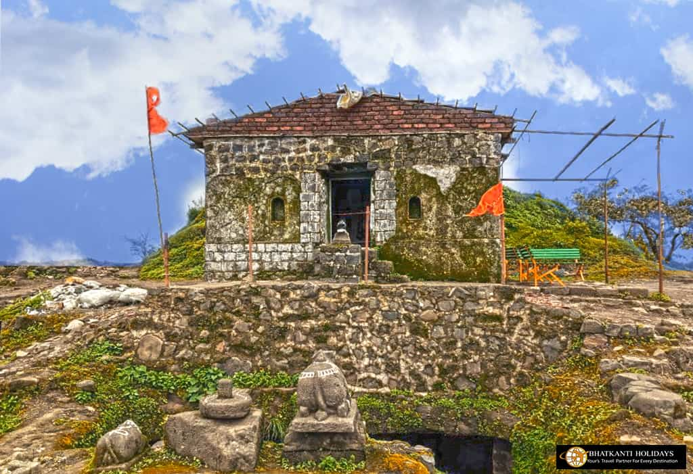
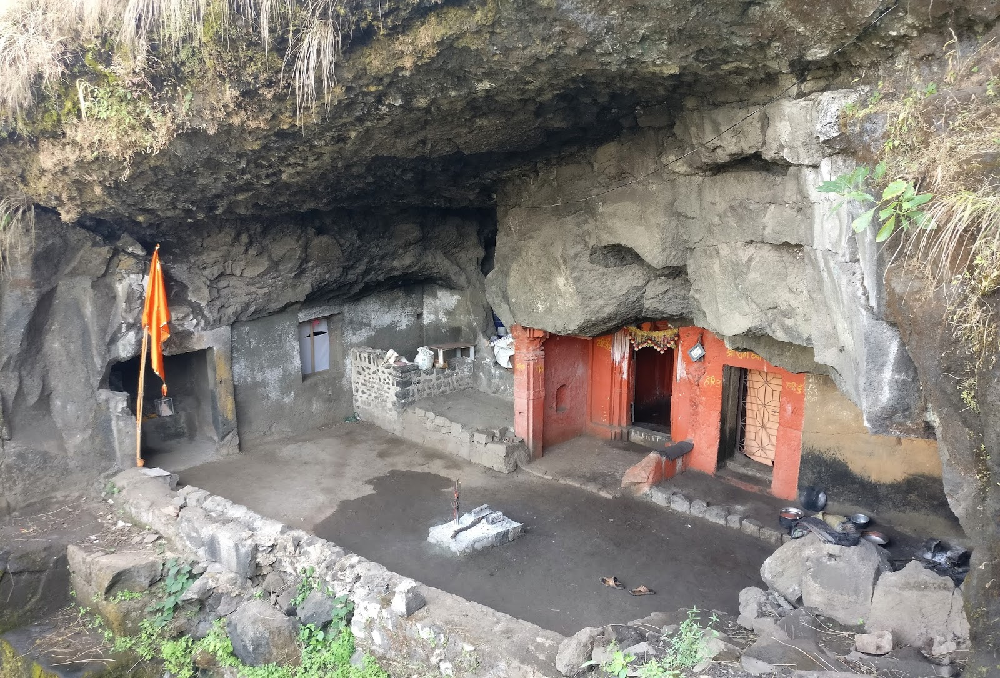
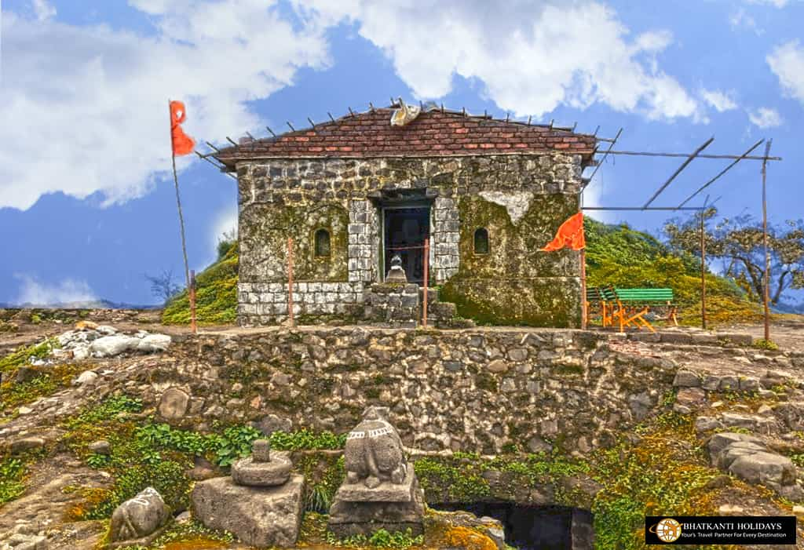
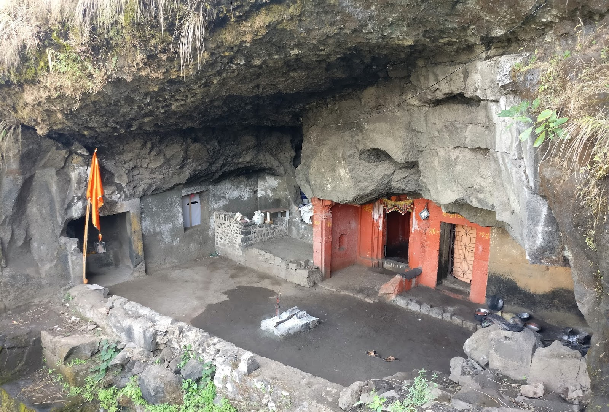

Tikona

 



About
Tikona Fort, also known as Vitandgad, is a hill fort located in the Maval region of the Western Ghats in Maharashtra, India. It is situated near the village of Tikona-Peth, approximately 22 kilometers from the hill station of Lonavala and around 60 kilometers from Pune city. The fort stands at an elevation of approximately 3,600 feet (1,100 meters) above sea level.
History:
Tikona Fort has a long history that dates back to the Satavahana period, making it over 2,000 years old. The fort changed hands multiple times and was under the control of various dynasties, including the Satavahanas, Shilaharas, and the Bahamanis.
During the reign of Chhatrapati Shivaji Maharaj, Tikona Fort was captured from the Nizamshahi dynasty in 1657 CE. It played a significant role in Shivaji's military strategy as it provided a commanding view of the region and guarded the important trade route that passed through the area.
Tikona Fort is renowned for its pyramid-shaped hill and its strategic location, which offers panoramic views of the Pawna Dam, the Tung Fort, and the surrounding Sahyadri mountain range. Some of the key features of the fort include:
Entrance Gates: The fort has a well-preserved entrance gate, known as the "Mahadarwaja," which showcases the fort's architectural style.
Trimbak Darwaja: Another prominent gate on the fort, named after the nearby Trimbakgad (Trimbak Fort).
Water Cisterns: Tikona Fort has several water cisterns that served as a crucial water source for the fort's occupants.
Temple: At the top of the fort, there is a small temple dedicated to Lord Shiva, known as the "Vitthal Temple."
Trekking and Tourism:
Tikona Fort is a popular destination for trekkers, adventure enthusiasts, and nature lovers. The trek to the fort starts from the base village of Tikona-Peth and takes around 1.5 to 2 hours to reach the summit. The trek is moderately challenging, with a mix of steep and rocky sections, making it an enjoyable experience for trekkers of different skill levels.
The best time to visit Tikona Fort is during the monsoon and winter seasons when the surroundings are green and pleasant. The monsoon season is particularly beautiful as the region gets covered in a lush carpet of greenery.
Today, Tikona Fort is managed and maintained by local authorities and attracts a steady flow of tourists who come to explore its historical significance, enjoy the trekking experience, and savor the breathtaking views from the top.